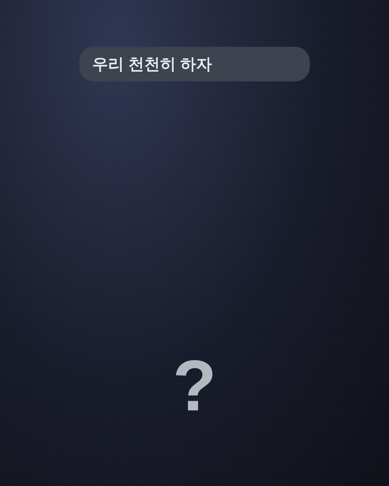
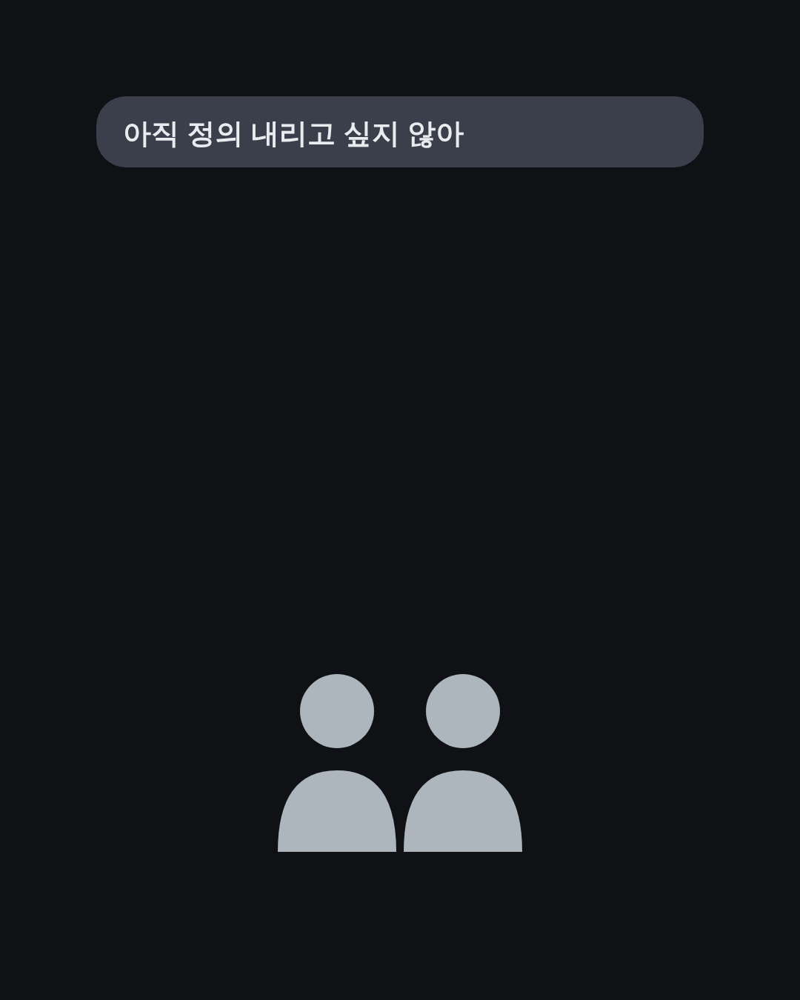
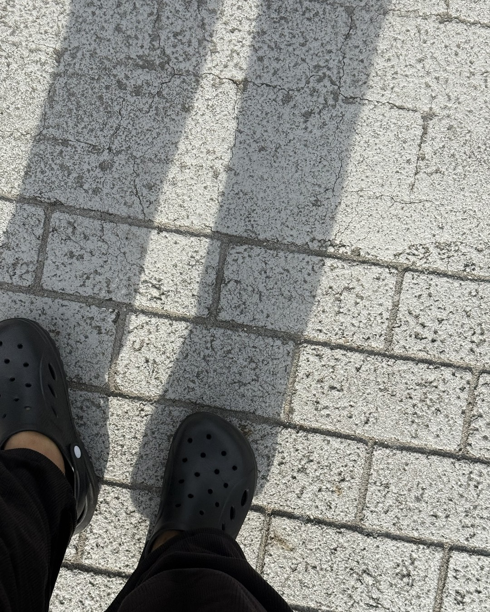
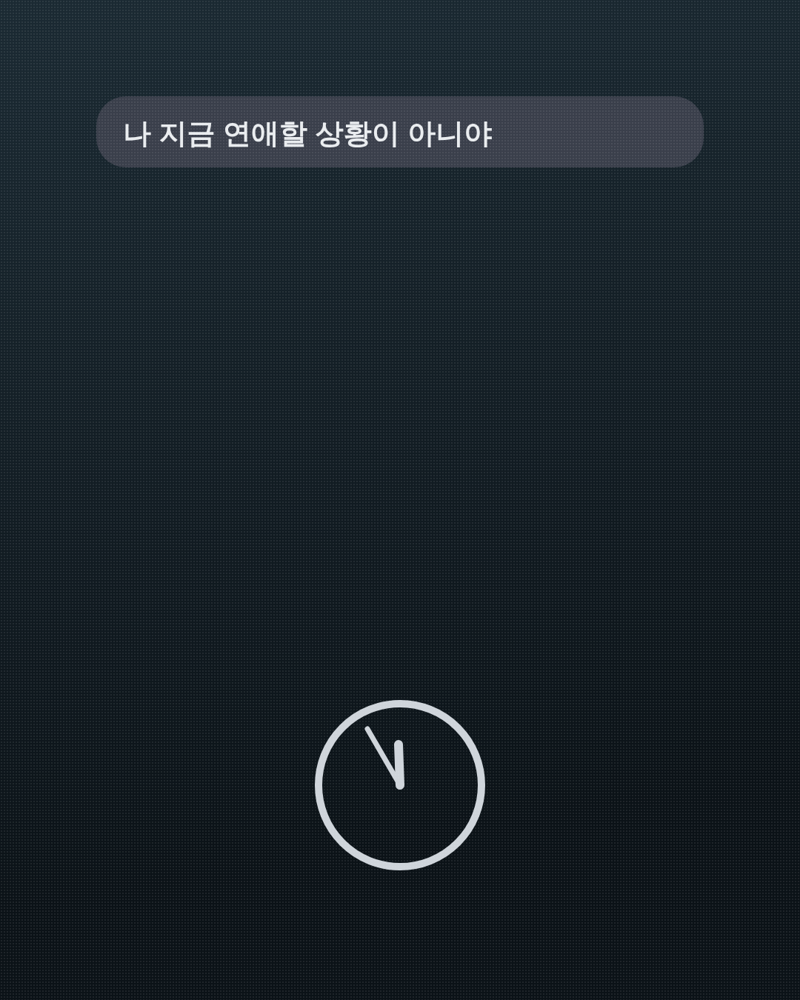
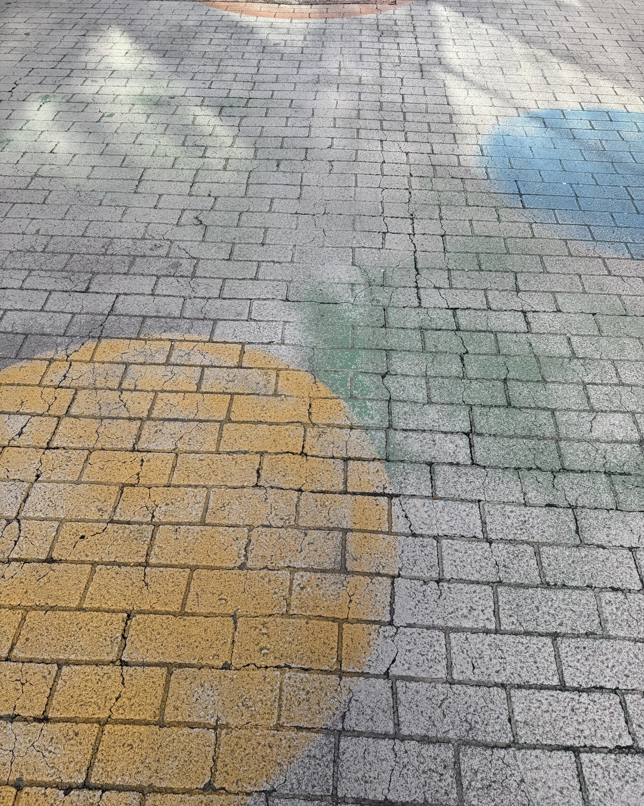
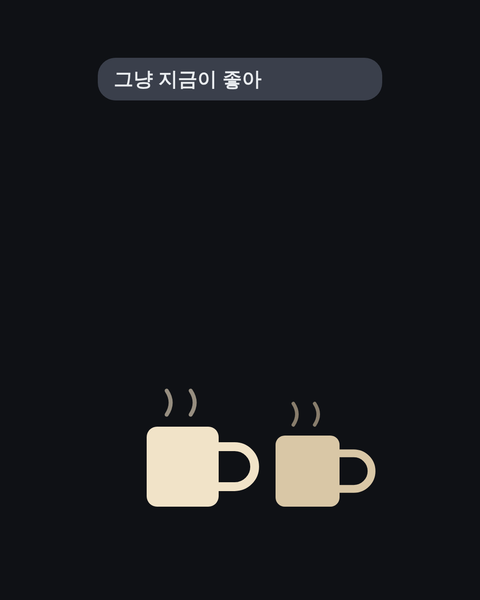
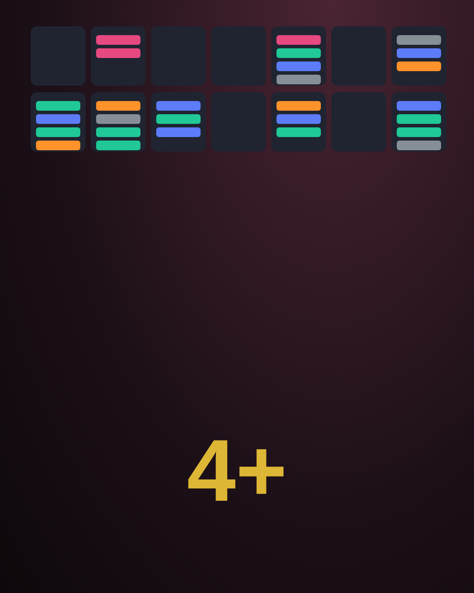
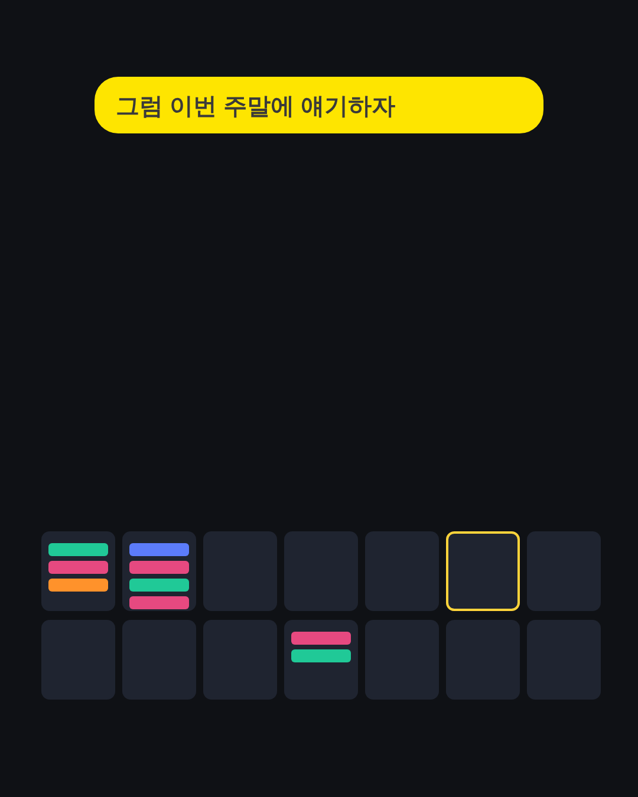
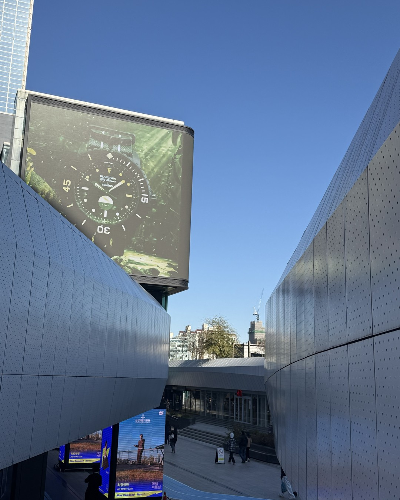

남자가 확신이 없을 때
하는 말, 진짜 뜻
("우리 천천히 하자"는 배려일까요?)
1/14
@mszexc
넘겨보세요 →

남자는 확신이 없으면
"모르겠어" 대신 이런 말을 해요.
(들어본 말을 세어보세요.)
2/14
@mszexc
남자들끼리 하는 말 #65
첫 번째.
"우리 천천히 하자."
(속도가 아니라, 방향을 아직 못 정한 거예요.)
3/14
@mszexc
남자들끼리 하는 말 #65

두 번째.
"아직 정의 내리고 싶지 않아."
(다른 선택지를 닫고 싶지 않다는 뜻일 수 있어요.)
4/14
@mszexc
남자들끼리 하는 말 #65

세 번째.
"나중에 얘기하자."
(그 "나중"은 보통 오지 않아요.)
5/14
@mszexc
남자들끼리 하는 말 #65

네 번째.
"나 지금 연애할 상황이 아니야."
(확신이 있으면, 남자는 상황을 만들어요.)
6/14
@mszexc
남자들끼리 하는 말 #65

다섯 번째.
"너 같은 사람 없어."
(진심이에요. 그런데 다음 약속이 없으면 확신은 아니에요.)
7/14
@mszexc
남자들끼리 하는 말 #65

여섯 번째.
"그냥 지금이 좋아."
(앞으로를 그리지 않는다는 뜻이기도 해요.)
8/14
@mszexc
남자들끼리 하는 말 #65
남자는 확신이 없으면 말이 흐려져요.
확신 있는 남자는, 날짜를 말해요.
9/14
@mszexc
남자들끼리 하는 말 #65

몇 개 들어봤나요?
4개 이상이면, 아직 고르는 중인 남자예요.
(놓치기 싫지만, 고르지도 않아요.)
10/14
@mszexc
남자들끼리 하는 말 #65
"천천히"라는 말엔
"좋아. 근데 우리 지금 어디쯤이야?"
(속도 말고 방향을 물어보세요.)
11/14
@mszexc
남자들끼리 하는 말 #65

"나중에"라는 말엔
"그럼 이번 주말에 얘기하자."
(날짜로 바꾸면 답이 나와요.)
12/14
@mszexc
남자들끼리 하는 말 #65

말보다 봐야 할 건
다음 약속이 잡히는지예요.
13/14
@mszexc
남자들끼리 하는 말 #65
이것만 기억하세요.
확신 있는 남자는 "천천히" 대신 "언제"를 말해요.
남자가 하는 말의 뜻은 전자책 1·2권에 · 프로필 링크에서 무료로 받아보세요
14/14
@mszexc
남자들끼리 하는 말 #65